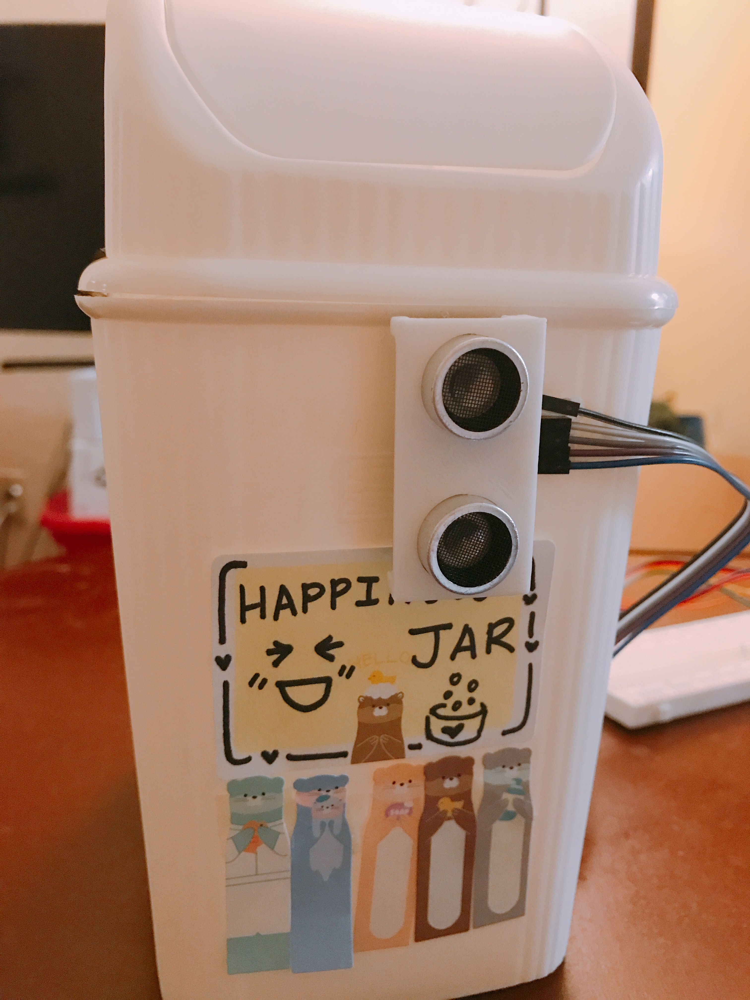

Final Project - The Joy of Happy Jar!
Whenever you feel down, you can take happy pills that are notes with happy memories you have previously written. I have been actually trying this exercise since the beginning of this year, and it works! So, I decided to create a smart happy jar that opens up automatically by utilizing my new arduino skills!
Project Video
Circuit's operation

To create a moving lid of this smart happy jar, I attached a servo motor on the side of jar and connected it to a wire on the edge of a lid. So, when wire is pulled by the servo motor rotates 180 degree, and it opens up the jar. And servo motor is controlled by a signal from a hand sensor which is ultra-sonic sensor.
Circuit
Schematic
This is a schematic for my final smart happy jar project. The servo motor is connected to USB port, Pin 9, and GND. Power is connected to the LED strip and to ground. The ultrasonic sensor has 4 connections. VCC is connected to 5v on the arduino. GND on the sensor is connected to GND. TRIG on the sensor is connected to pin 6 on the arduino and ECHO on the sensor is connected to pin 7.
Firmware
This is arduino codes to control the servo motor and ultrasonic sensor. First, I created variables for the trigger and echo pin called trigger and echo, respectively. The trigger pin is connected to digital pin 6, and the echo pins is connected to digital pin 7. I also create two other variables of type long: duration and cm. The duration variable saves the time between the emission and reception of the signal. The cm variable will save the distance in centimeters. In the setup(), I initialized the serial port at a baud rate of 9600, and set the trigger pin as an output and the echo pin as an input.In the loop(), I triggerred the sensor by sending a HIGH pulse of 5 or more microseconds. But, before that, I gave a short LOW pulse to ensure I will get a clean HIGH pulse. Once ultrasonic sensor detects any objects nearby and it reads the signal from the sensor: a HIGH pulse whose duration is the time (in microseconds) from the sending of the ping to the reception of its echo off of an object. Then, it converts time into centimeters. And then if statement controls the functionality of jar's lid movement. If the sensor senses any objects within a 10cm area, then the lid of the jar opens as the servo moves by 180 degree. After 3 seconds, it automatically closes and servo comes back to original location.
#include <Servo.h> // include servo library
int TRIG = 6; //Trigger
int ECHO = 7; //Echo
long duration, cm;
Servo servo; //create servo class
boolean isNear = false;
void setup(){
Serial.begin (9600); //Serial Port begin
pinMode(TRIG, OUTPUT); //setting up trigger as output
pinMode(ECHO, INPUT); //setting up echo as input as an sensor
servo.attach(9); //motor connected pin 9
servo.write(180); //moving servo motor by 180 degree so it opens/closes the jar
}
void loop() {
// The sensor is triggered by a HIGH pulse of 5 or more microseconds.
// Give a short LOW pulse beforehand to ensure a clean HIGH pulse:
digitalWrite(TRIG, LOW);
delayMicroseconds(5);
digitalWrite(TRIG, HIGH);
delayMicroseconds(10);
digitalWrite(TRIG, LOW);
// Read the signal from the sensor: a HIGH pulse whose
// duration is the time (in microseconds) from the sending
// of the ping to the reception of its echo off of an object.
pinMode(ECHO, INPUT);
duration = pulseIn(ECHO, HIGH);
// Convert the time into a distance
cm = (duration/2) / 29.1; // Divide by 29.1 or multiply by 0.0343
Serial.print(cm);
Serial.print("cm");
Serial.println();
if(cm < 10) { //If hand(object) is located within 10cm boundry of sensor, the door opens. If not it closes.
if(!isNear){
isNear=true;
servo.write(0);
delay(3000);
}
} else{
if(isNear){
isNear = false;
servo.write(180);
delay(1000);
}
}
delay(300);
}